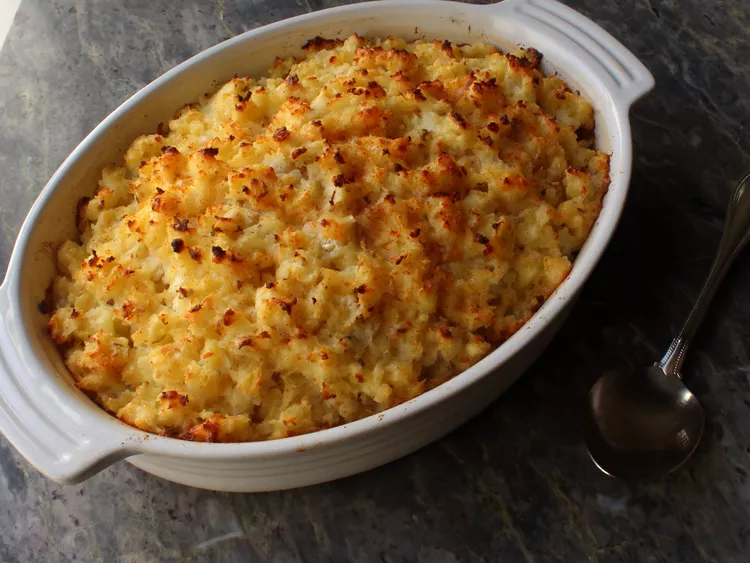

My potatoes Romanoff is an ideal dish for big holiday gatherings since you can make it the day before and bake it when needed. Featuring shredded baked russet potatoes and sweet shallots fluffed up with sour cream and lots of Cheddar cheese, this delicious potato casserole is the perfect side dish for any cut of steak. Chef John Schenk taught me how to make this special potato gratin ten years ago at his restaurant Strip House in Las Vegas.
You can make steakhouse-worthy potatoes Romanoff in the comfort of your own home. No, it's not too good to be true! Chef John's potatoes Romanoff recipe is just as good as your favorite restaurant — and it's super easy to make with basic ingredients.
Potatoes Romanoff is a rich, decadent steakhouse side dish. Baked potatoes are shredded and combined with cheese, sour cream, shallots, salt, pepper, and cayenne pepper to make this incredibly creamy and satisfying recipe.
Here's what you'll need to make Chef John's potatoes Romanoff:
Starchy russet potatoes are perfect for this recipe, as they absorb all the creamy ingredients and flavors.
You could also use minced green onions, leeks, or plain yellow onions.
Aside from the fresh shallots, this potatoes Romanoff recipe also gets its flavor from salt, pepper, and cayenne pepper.
Sharp white Cheddar cheese adds just the right amount of flavor and creaminess. You could also use regular Cheddar if that's what you have on hand.
Rich, tangy sour cream is the perfect way to finish off this top-rated recipe for potatoes Romanoff.
You'll find the full, step-by-step recipe below — but here's what you can expect when you make Chef John's potatoes Romanoff:
Wrap each potato in foil and place on a baking sheet. Use a knife to poke holes in the potatoes, then bake until the potatoes are tender and easily pierced with a fork. Allow the potatoes to cool completely, unwrap, and place on a plate. Cover and refrigerate overnight.
Use a cheese grater to shred the (skin-on) potatoes into a large bowl. Add shallots, seasonings, and cheese. Mix well. Add sour cream and stir until just-combined.
Transfer the potato mixture to a buttered casserole dish. Pat it down lightly. Bake until the potatoes are hot and the top is browned.
Store your leftover potatoes Romanoff in an airtight container in the fridge for up to five days. Reheat in the microwave or in the oven until the potatoes are heated through.
Yes, you can freeze potatoes Romanoff. You might want to cook the potatoes in a disposable pan for easier freezing. Allow the dish to cool completely, then wrap the whole pan in one layer of storage wrap. Follow that up with one layer of foil for added protection. Freeze for up to one month. Thaw in the fridge and reheat in the oven.